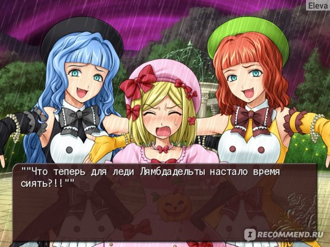
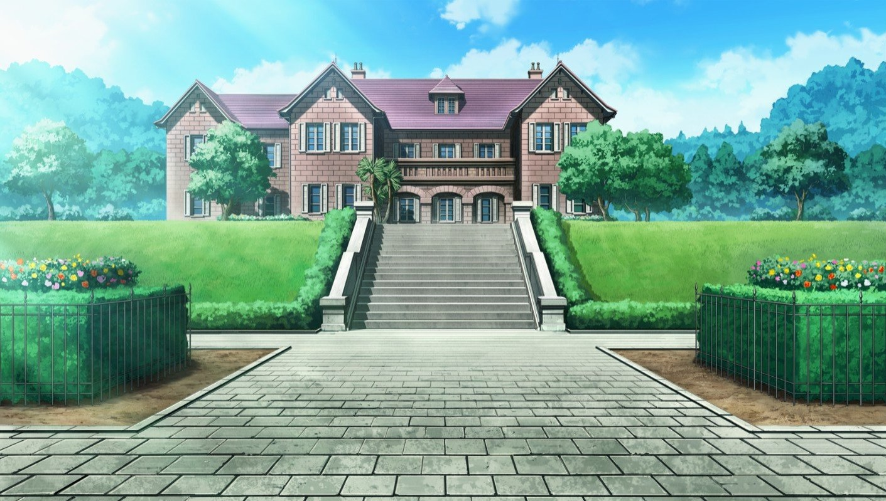

Umineko no Naku Koro ni - это серия кинетических визуальных новелл, созданная 07th Expansion (Ryukishi07). Сюжет разделен на восемь основных арок, которые принято называть эпизодами. Первые четыре эпизода сериала называются аркой вопросов Umineko no Naku Koro ni. Ее сменила арка ответов - Umineko no Naku Koro ni Chiru, которая состоит из последних четырех эпизодов.
Первый эпизод, Легенда о Золотой Ведьме, была впервые выпущена на Comiket 72 17 августа 2007 года. После этого на каждом Comiket были выпущены последовательные эпизоды, а последний эпизод основной истории, Сумерки Золотой Ведьмы, была выпущена в декабре. 31, 2010. Вся серия была переведена фанатами The Witch Hunt, которые позже сотрудничали с MangaGamer, чтобы официально выпустить серию на английском языке по всему миру под названиями Umineko When They Cry Question Arcs и Umineko When They Cry Answer Arcs 8 июля 2016 года и в ноябре. 17, 2017 соответственно. В английскую версию можно играть в системах Windows, Mac и Linux, и ее можно приобрести в MangaGamer, Steam или GOG.
Umineko no Naku Koro ni считается продолжением Higurashi no Naku Koro ni (Когда плачут цикады), и они оба являются частью всеобъемлющей When They Cry (Когда они плачут) серии. В то время как Umineko содержит важные элементы, связанные с Higurashi, основной сюжет Umineko - это отдельная независимая история.
Добро пожаловать в мир "Umineko When They Cry" ("Когда Плачут Чайки")
Добро пожаловать на Роккенджиму 4 октября 1986 года. Вам была предоставлена возможность мельком увидеть семейную конференцию, ежегодно проводимую семьей Уширомия. Остаток жизни старого главы семьи, который накопил огромное состояние, очень невелик. Для его детей самая большая проблема на этом семейном собрании - это распределение его наследства. Все хотят столько денег, никто никому не уступает, и никто никому не верит.
Кому достанется наследство старого главы?
Где те 10 тонн золота, которые, как говорят, спрятал старый глава?
Можно ли разгадать пугающую загадку эпитафии, которая, как говорят, указывает на местонахождение этого золота?
Посреди всего этого появляется подозрительное письмо от одного, утверждающего, что он ведьма. Присутствие на этом острове 19-го человека, на котором должно быть только 18, начинает висеть в воздухе. Жестокие убийства повторяются, а неразрешимые загадки остаются на месте.
Сколько умрет? Сколько выживет? Или все умрут?
Виновник один из 18 или нет?
Кто виноват: «человек» или «ведьма»?
Пожалуйста, насладитесь этим изолированным островом, западным особняком, таинственным гаджетом старых добрых времен в полной мере.
Umineko When They Cry - это визуальная новелла в жанре детектива, которая передает свою историю в основном посредством текстового повествования и диалогов, дополненных визуальными и звуковыми элементами, такими как спрайты персонажей, фоновая музыка и звуковые эффекты. Это называется "звуковым романом" 07th Expansion из-за того, что в игре больше внимания уделяется созданию атмосферы с помощью звуковых элементов, а не визуальных аспектов. В оригинальных релизах озвучка персонажей отсутствует.
Umineko является линейным и не содержит интерактивных элементов игрового процесса (в основном). Помимо продвижения текста, игроки также могут получить доступ к режиму, позволяющему им читать различную дополнительную информацию о персонажах и истории. Каждый эпизод также содержит два эпилога - Чайная вечеринка и ???, которые последовательно открываются. Они являются продолжением основной истории, которые часто содержат важные сюжетные моменты, и их необходимо прочитать перед переходом к следующему эпизоду.
Несмотря на отсутствие интерактивных элементов игрового процесса, Umineko представляет собой игру между автором и читателем, с рейтингами сложности, указанными в описаниях к каждому эпизоду. Это относится к сложности загадок в каждом эпизоде, которые читатель должен активно попытаться разгадать. Несколько элементов рассказа вводятся в ходе рассказа, чтобы помочь читателям разгадать тайну вместе с главным героем истории. Каждая новая глава закрыта на "замок" открывается только после прочтения второго эпилога. Однако "замок" можно открыть вручную, и для этого даже не нужно отвечать на вопросы по содержанию главы, как это было, к примеру, в Higurashi.
Umineko no Naku Koro ni проходит в основном с 4 по 5 октября 1986 года на Роккенджиме, небольшом острове, находящемся в частной собственности богатой семьи Уширомия. Семья Уширомия собирается на ежегодную семейную конференцию, посвященную разделу имущества, принадлежащего Кинзо, больному главе семьи. Помимо двенадцати членов семьи есть пять их слуг и врач Кинзо, всего восемнадцать человек.
Главный герой Батлер Уширомия, один из внуков Кинзо, отсутствовал на семейной конференции последние шесть лет из-за личных семейных обстоятельств. По возвращении Баттлер вновь знакомится с легендой о «Золотой ведьме» Беатриче, которая, по слухам, в прошлом отдала Кинзо десять тонн золота, чтобы возродить семью Уширомия, которая была искалечена во время Великого землетрясения Канто 1923 года. Ее портрет находится в вестибюле семейного особняка Уширомия, а под ним загадочная эпитафия написана. Ходят слухи, что тот, кто разгадает загадку эпитафии, получит золото и станет преемником семьи Уширомия. После того, как тайфун застал семью на острове, начинают происходить загадочные убийства, часто такие, которые кажутся невозможными для человека.
С 2008 по 2015 год выпускалась серия манги, состоящая из арки вопросов, арки ответов и Tsubasa. Он был лицензирован для английского издательства Yen Press.
Серия ранобэ была проиллюстрирована Томохи и опубликована Kodansha с 2009 по 2018 год, охватывающая дуги вопросов и дуги ответов.
Студия DEEN создала аниме-адаптацию Арки вопросов, которая первоначально вышла в эфир в 2009 году.